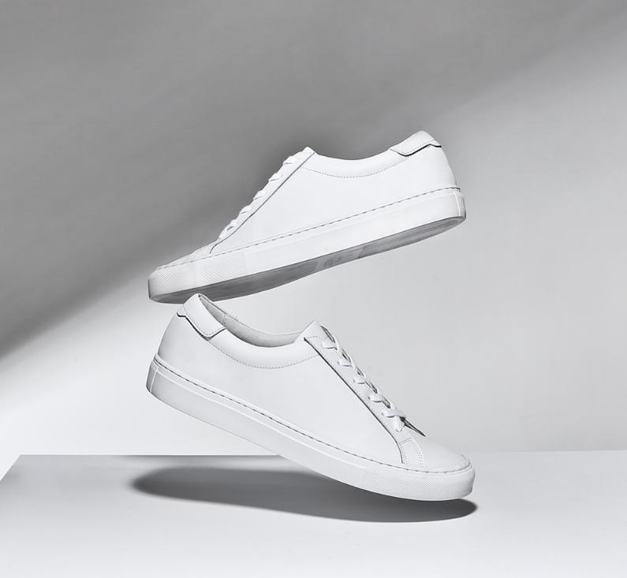
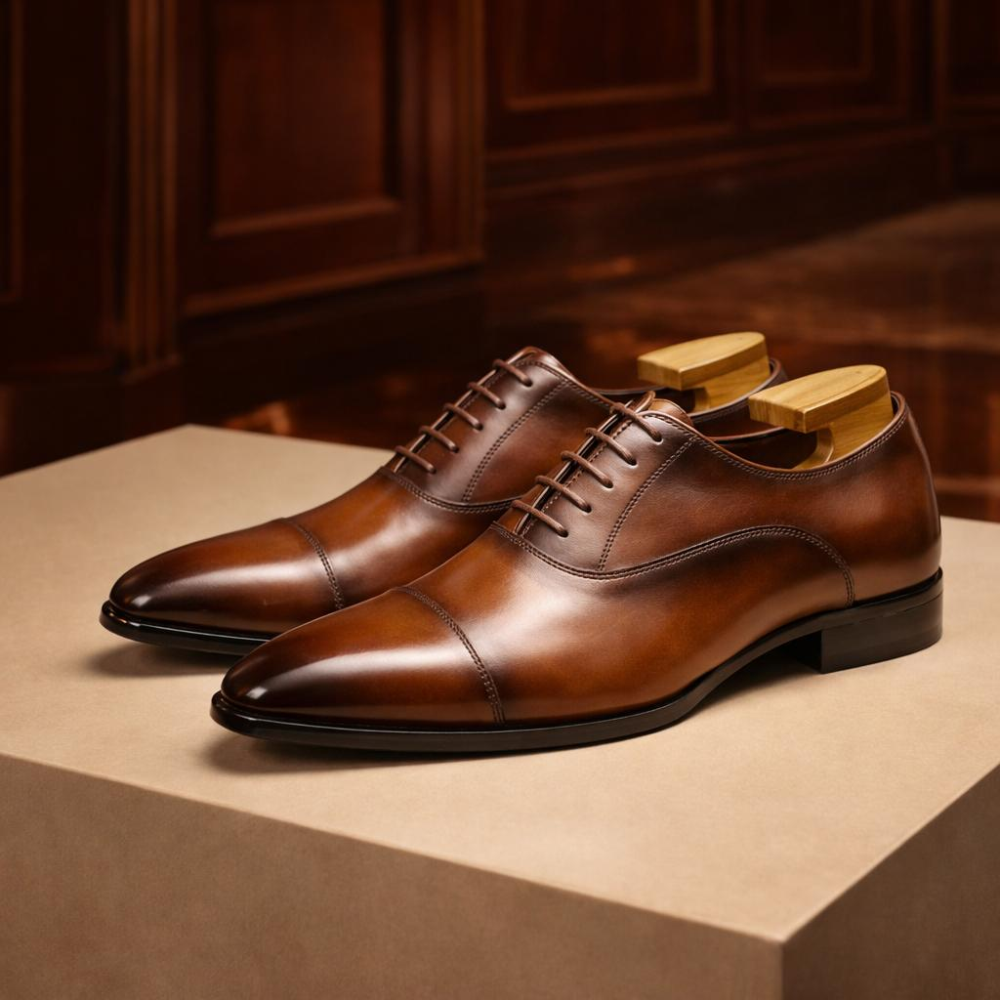
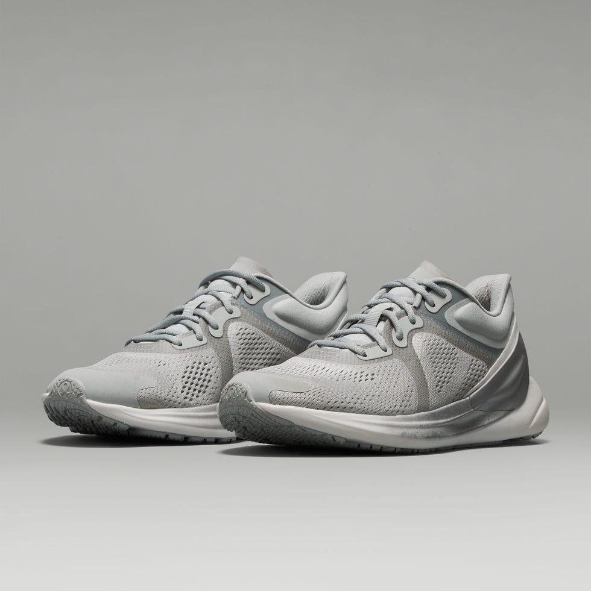

Tendencias
Las zapatillas que marcaran tendencia este año
10/11/2026
Descubre los modelos de zapatillas que estan de moda esta temporada y como combinarlos con tu ropa favorita.
En [nombre de la empresa], creemos que cada paso cuenta. Fundamos la primera zapatería en 1921, en el centro de la ciudad de León, lo que comenzó con la dedicación de un padre y sus dos hijos hacia el zapato artesanal se fue convirtiendo en la marca de referencia en la región para combinar comodidad y elegancia en cada momento. Desde un estilo clásico o una visión moderna, ya sea para diferentes sectores profesionales o distintos deportes en nuestra cadena encontrarás el mejor calzado para cada ocasión. La cercanía y familiaridad del artesano de siempre en cada paso de tu vida.
Las madreñas leonesas son un calzado tradicional de madera utilizado antiguamente en las zonas rurales y montañosas de León. Se fabricaban artesanalmente a partir de una sola pieza de madera, tallada por especialistas llamados madreñeros. Su diseño, con una base elevada y tres tacos, permitía proteger los pies del barro, la lluvia y la humedad. Se utilizaban en las labores agrícolas, ganaderas y domésticas, normalmente sobre zapatillas o escarpines. Hoy en día, representan una parte importante del patrimonio cultural leonés y de las tradiciones artesanales de la región.

10/11/2026
Descubre los modelos de zapatillas que estan de moda esta temporada y como combinarlos con tu ropa favorita.

08/11/2026
Aprende algunos trucos sencillos para limpiar, proteger y mantener tus zapatos de piel en perfecto estado durante mas tiempo.

05/11/2026
Te contamos por que es importante elegir zapatos comodos y adecuados para evitar molestias en los pies durante el dia
01/11/2026
Descrubre los tipos de calzado que no pueden faltar en tu armario durante el otoño y como sacarle el maximo partido
| CM | 22,4 | 22,7 | 23 | 23,4 | 23,7 | 24 | 24,4 | 24,7 | 25 | 25,4 | 25,7 | 26 | 26,4 | 26,7 | 27 | 27,4 | 27,7 | 28 | 28,4 | 28,7 | 29 | 29,4 | 29,7 | 30 | 30,4 |
|---|---|---|---|---|---|---|---|---|---|---|---|---|---|---|---|---|---|---|---|---|---|---|---|---|---|
| EU | 35 | 35,5 | 36 | 36,5 | 37 | 37,5 | 38 | 38,5 | 39 | 39,5 | 40 | 40,5 | 41 | 41,5 | 42 | 42,5 | 43 | 43,5 | 44 | 44,5 | 45 | 45,5 | 46 | 46,5 | 47 |
| UK | 3 | 3,5 | 4 | 4,5 | 5 | 5,5 | 5,5 | 6 | 6,5 | 6,5 | 7 | 7,5 | 8 | 8 | 8,5 | 9 | 9,5 | 10 | 10,5 | 11 | 11,5 | 12 | 12,5 | 13 | 13,5 |
| EEUU | 4 | 4,5 | 5 | 5,5 | 5,5 | 6 | 6,5 | 7 | 7,5 | 7,5 | 8 | 8,5 | 9 | 9,5 | 9,5 | 10 | 10,5 | 11 | 11,5 | 12 | 12,5 | 13 | 13,5 | 14 | 14,5 |